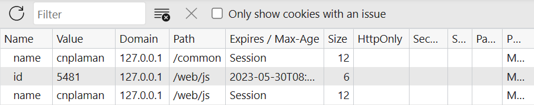

- 特点
-
.在浏览器端|客户端|C端保存一定大小的数据
.同级域名可以共享数据；同一网站中，所有页面共享一套cookie
.有一定的生存时间expires，过期则自动清除；默认是跟随浏览器的进程，即关闭浏览器，就清除cookie
.存储数据大小、数量有限制：4K
.不安全；敏感数据不要使用
.属于DOM范畴，是document的一个属性
.在 开发者视图F12→应用Application→Cookies中查看
- 语法
-
document.cookie
- 属性
-
| 类别 |
说明 |
| name=value |
存储的信息标识 |
| expire |
过期时间；默认随浏览器|会话Session结束而结束；通常按天计算 |
| path |
存储位置；默认是根目录/ |
| priority |
优先级/ |
-

- 设置
- []查看cookie的生存
-
1.设置默认生存时间的cookie：name
2.设置指定生存时间的cookie：id
3.打开开发者视图，查看cookie的保存情况
4.关闭浏览器
5.注释掉设置cookie的相关代码，重新打开浏览器，检测cookie的保存情况
document.cookie = 'name=cnplaman';
let d = new Date();
d.setDate(d.getDate() + 10);
document.cookie = 'id=5481;expires=' + d;
- []设置Cookie函数封装
-
.封装一个设置值对、过期时间[默认2天]的函数
.如何做数据有效性检测?
let setCookie = function (name, value, day = 2) {
let d = new Date();
d.setDate(d.getDate() + day);
document.cookie = `${name}=${value};expires=${d}`;
}
- 获取
-
.同设置Cookie，只是不需要赋值
.结果是以分号+空格来分隔值对的字符串
.字符串的拆分：使用split()多次拆分，获取子串
- []获取Cookie函数封装
-
.return不能终止forEach，只能使用传统的for
let getCookie = function (name) {
let arr = document.cookie.split('; ');
for (let i = 0; i < arr.length; i++) {
let tmp = arr[i].split('=');
if (name == tmp[0]) {
return tmp[1];
}
}
return '';
}
- 清除
-
.设置一个同名Cookie：过期时间提前、值任意，由系统判断并删除
setCookie(name, '', -1);
- []清除Cookie函数封装
-
let clearCookie = function (name) {
setCookie(name, '', -1);
}
- 应用
- []记住用户
-
let form = document.querySelector('#rem');
let uname = form.querySelector('#uname');
let cb = form.querySelector('#cb');
let clearBtn = form.querySelector('#clear-btn');
let setCookie = function (name, value, day = 2) {
let d = new Date();
d.setDate(d.getDate() + day);
document.cookie = `${name}=${value};expires=${d}`;
}
let getCookie = function (name) {
let arr = document.cookie.split('; ');
for (let i = 0; i ≤ arr.length; i++) {
let tmp = arr[i].split('=');
if (name == tmp[0]) {
return tmp[1];
}
}
return '';
}
let clearCookie = function (name) {
setCookie(name, '', -1);
}
//
if (getCookie('name')) {
uname.value = getCookie('name');
cb.checked = true;
}
form.addEventListener('submit', (e) => {
if (cb.checked) {
setCookie('name', uname.value);
}
})
clearBtn.addEventListener('click', () => {
clearCookie('name');
uname.value = '';//
cb.checked = false;//
})
- []换肤
- []存档